L'ancien chemin vicinal n°2 de Puilaurens permettait aux martinlissois d'atteindre Lapradelle en longeant l'Aude en rive droite (Aucun pont sur l'Aude), puis de remonter l'Aliès à partir du confluant Aliès/Aude (pont d'Aliès), jusqu'au col du Campérié.
La gare s'est implantée sur le parcours de ce chemin, rendant ce chemin peu pratique, d'autant que la route nationale 117 (devenue RD 117) suit pratiquement le même parcours. Aussi les restes de ce chemin sont parfois difficiles à retrouver...
Dernièrement cette partie du chemin vicinal n°2 a été dégagée. Une page spécifique est consacrée à cette partie du chemin.
En Partant du pont de la Gare, en suivant la montagne sur cette boucle de l'Aude qui voit le confluent de l'Aude et du Rébenty en direction du pont du Bourrec
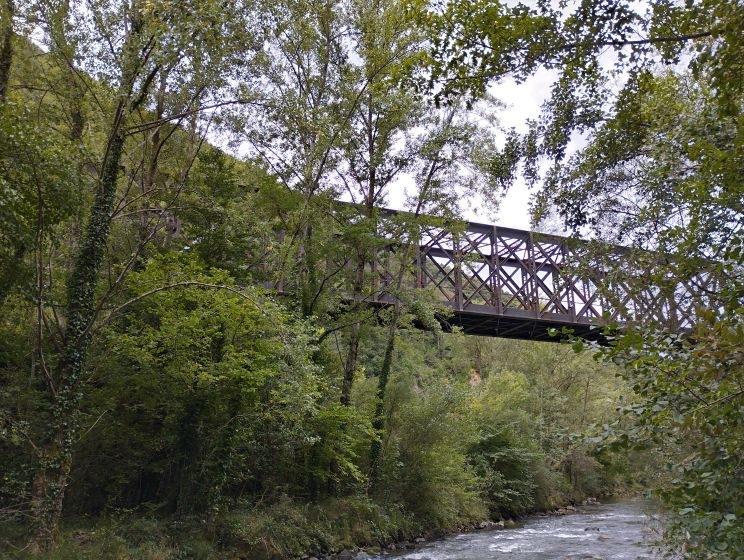
Pont du Bourrec depuis le chemin vicinal n°2 (effrondement passé)
Le chemin passe sous ce pont de fer, mais se conplexifie de suite - il manque environ 3 mètres, effondés dans l'Aude. On peut passer en force au travers d'une végétation dense (en bord d'aude ou un peu plus haut).
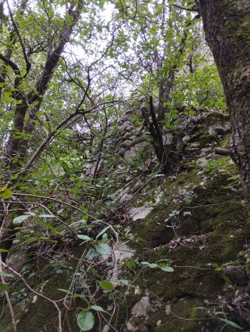
Passage effondré du chemin vicinal n°2
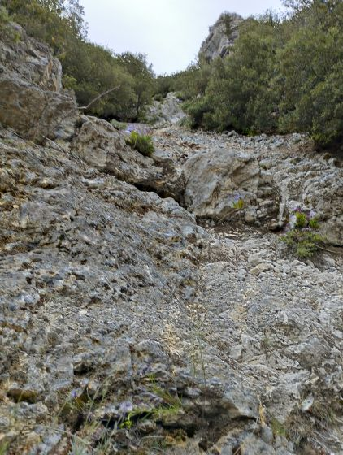
Coulée de pierres aboutissant au chemin
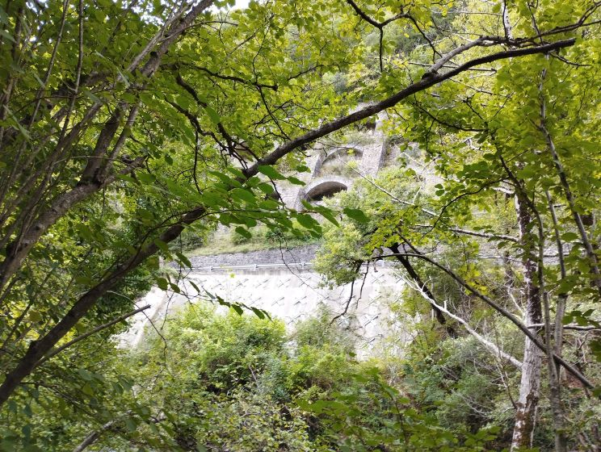
Vue des arches de protection de la voie ferrée entre le pont du Bourrec et le tunnel de la Gamasse depuis le chemin vicinal n°2
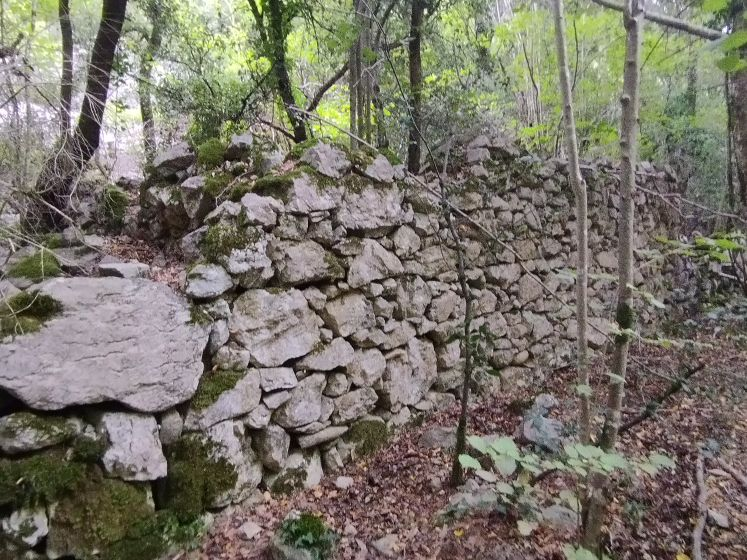
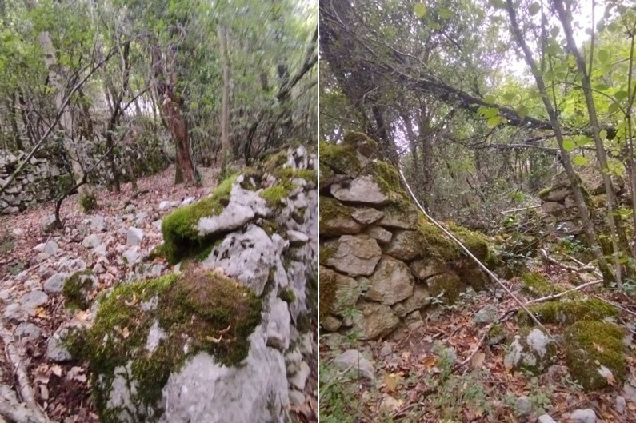
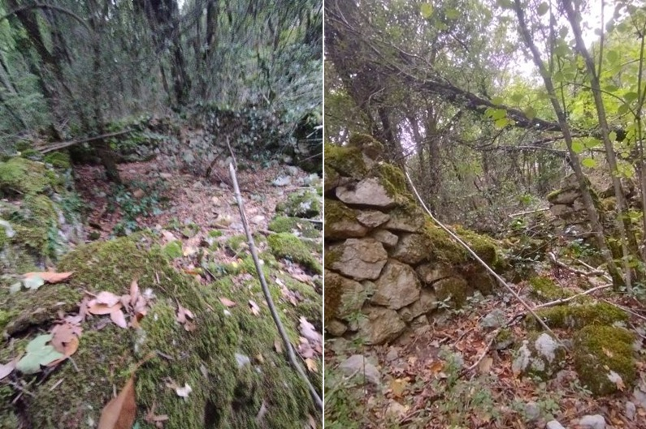
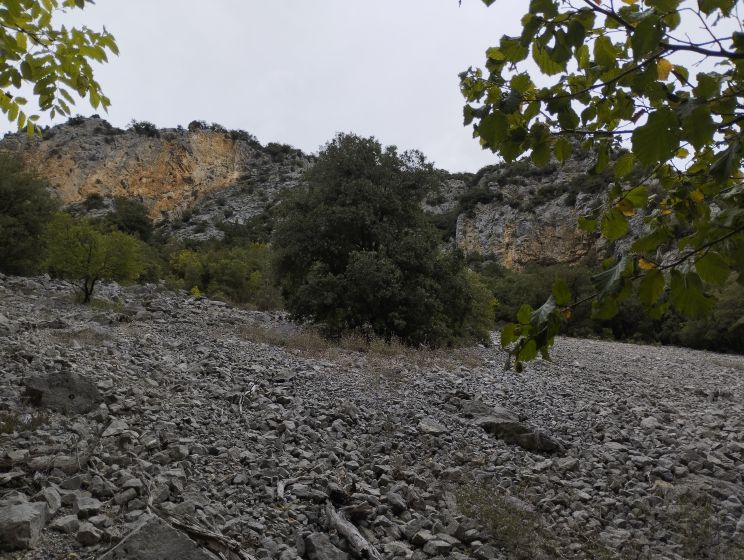
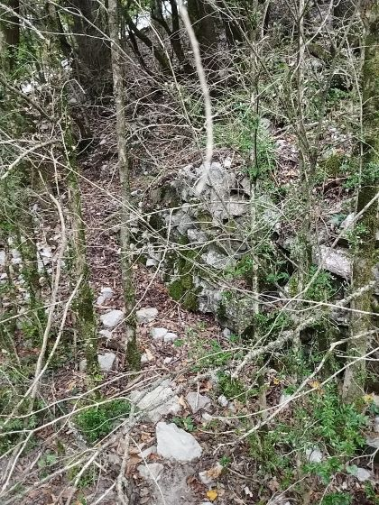
Vue diverses le long du chemin en arrivant en proximité du pont d'Aliès
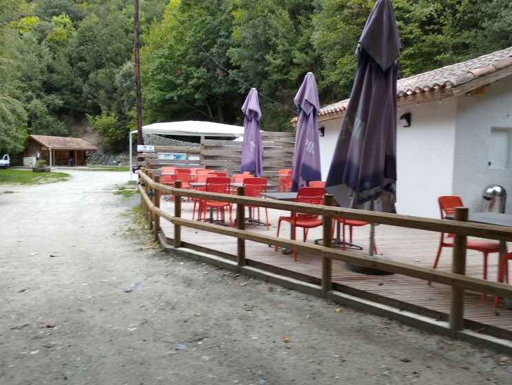
Guinguette du pont d'Aliès
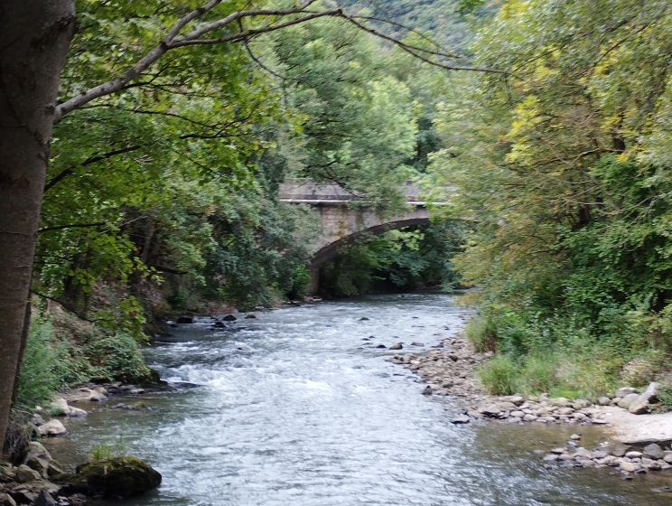
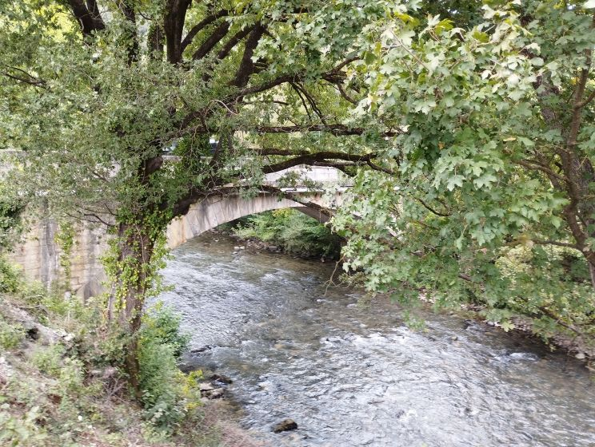
le du pont d'Aliès vue rive droite amont
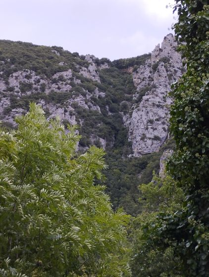
Vue de la grotte de Planèses depuis le rond point du pont d'Aliès
En traversant la RD 117, on quite l'ancien chemin vicinal pour suivre l'Aude jusqu'à Axat.
On passe sous le pont de la Gamasse, on longe la station d'épuration d'Axat, sous le pont ferroviaire à l'entrée d'Axat, jusqu'au Pont vieux d'Axat
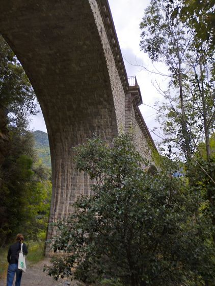
Pont ferroviaire à l'entrée d'Axat